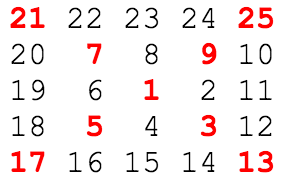
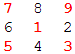
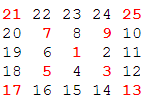

Problem 28: Number Spiral Diagonals
Starting with the number 1 and moving to the right in a clockwise direction a 5 by 5 spiral is formed as follows:
It can be verified that the sum of the numbers on the diagonals is 101. What is the sum of the numbers on the diagonals in a 1001 by 1001 spiral formed in the same way?
The Catch
Discover the pattern that generates the numbers that lay on the 2 diagonals.
The Light
Take a look at a smaller square:
This is a 3 x 3 square with side equals 3. Notice that the top-right corner number a can be computed using the formula a = (2*i + 1)2 where i >= 1. Starting with i = 1, a = (2*1 + 1)2 = 9.
Then, notice that the top-left corner number b can be computed using the formula b = a - 2*i with the same i that formulated a. So b = 9 - 2*1 = 7.
Similarly, bottom-left corner number c can be computed using c = b - 2*i with the same i that formulated b. So c = 7 - 2*1 = 5.
Lastly, bottom-right corner number d can be computed using d = c - 2*i with the same i that formulated c. So d = 5 - 2*1 = 3.
With the 3 x 3 square, i increments to 1. If you repeat this pattern for the 5 x 5 square the number i increments to 2. Due to the spiral nature of these n x n squares, n cannot be even. Thus i only increments to n/2, dropping all decimals.
The Code
public class Problem28
{
public static void main(String[] args)
{
int total = 1; //Sequence starts with 1, the ring number
int width = 1001/2;
for(int i = 1; i <= width; i++)
{
int tmp = (2*i + 1) * (2*i + 1);
total += tmp;
//Moving counter clockwise
tmp = tmp - 2*i;
total += tmp;
tmp = tmp - 2*i;
total += tmp;
tmp = tmp - 2*i;
total += tmp;
}
System.out.println(total);
}
}